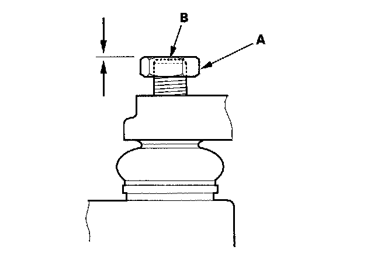
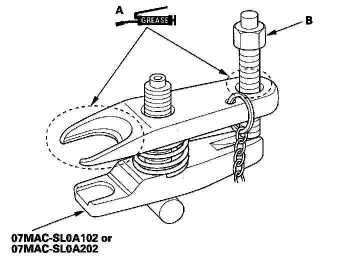
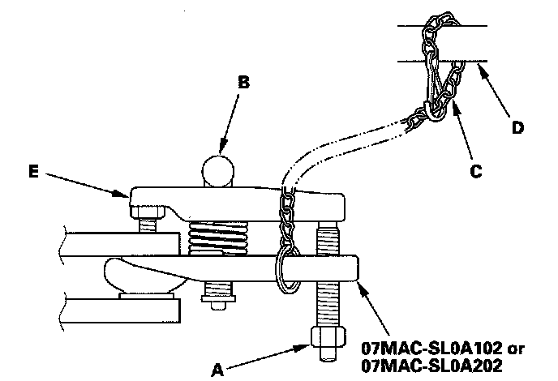

Front and Rear Suspension
Ball Joint RemovalSpecial Tools Required
^ Ball joint remover, 32 mm 07MAC-SL0A102
^ Ball joint remover, 28 mm 07MAC-SL0A202
NOTICE: Always use a ball joint remover to disconnect a ball joint. Do not strike the housing or any other part of the ball joint connection to disconnect it.
07MAC-SL0A102 or 07MAC-SL0A202
1. Install a hex nut (A) onto the threads of the ball joint (B). Make sure the nut is flush with the ball joint pin end to prevent damage to the thread end of the ball joint pin.

2. Apply grease to the ball joint remover on the areas shown (A). This will ease installation of the tool and prevent damage to the pressure bolt (B) threads.

3. Loosen the pressure bolt (A) and install the ball joint remover as shown. Insert the jaws carefully, making sure not to damage the ball joint boot. Adjust the jaw spacing by turning the adjusting bolt (B).
NOTE: Fasten the safety chain (C) securely to a suspension arm or the subframe (D). Do not fasten it to a brake line or wire harness.

4. After adjusting the adjusting bolt, make sure the head of the adjusting bolt is in the position shown to allow the jaw (E) to pivot.
5. With a wrench, tighten the pressure bolt until the ball joint pin pops loose from the ball joint pin hole. If necessary, apply penetrating type lubricant to loosen the ball joint pin.
NOTE: Do not use pneumatic or electric tools on the pressure bolt.
6. Remove the ball joint remover, then remove the nut from the end of the ball joint pin, and pull the ball joint out of the ball joint pin hole. Inspect the ball joint boot, and replace it if damaged.